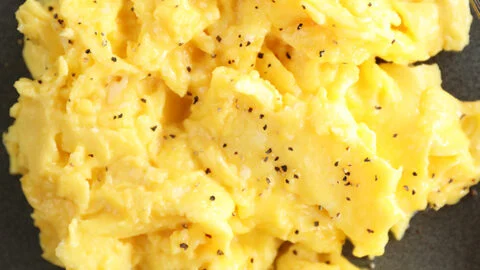

Scrambled Eggs

Keys to Success
Use a nonstick pan for easy cooking. Cook over medium-low heat to avoid dryness. Remove the eggs from heat just before they are fully cooked, as they will continue cooking off the heat. Season at the end for the best flavor. Consider whisking aggressively for a fluffier texture.You can also add cheese or herbs at the very end.
Ingredients
- 2-3 large eggs
- 1 tablespoon of butter or oil
- Optional: a splash of milk, plant milk, or water
- Salt and pepper to taste
Instructions for cooking
- Whisk the eggs: Crack eggs into a bowl and whisk until yolks and whites are fully combined. Add a splash of milk or water if desired.
- Heat the pan: Melt butter or add oil to a nonstick skillet over medium heat.
- Cook the eggs: Pour the egg mixture into the pan and let it cook for a few seconds undisturbed.
- Scramble: Use a rubber spatula to pull the eggs across the pan, forming soft curds.
- Continue cooking: Fold and stir the eggs every few seconds until they are mostly set, but a little liquid remains.
- Remove from heat: Take the pan off the heat and season with salt and pepper. The residual heat will finish cooking them.
- Serve immediately!
Home Page